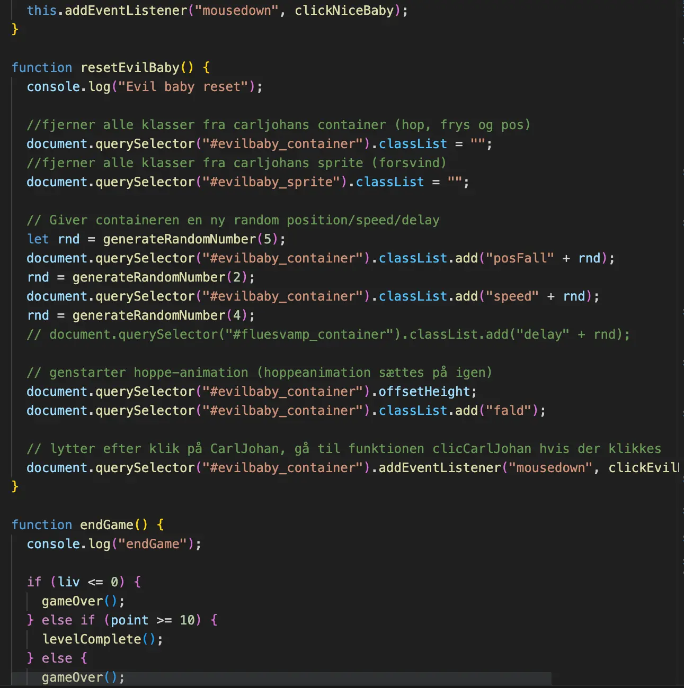

Tema 4: Animation
Tema 4 var første gang, vi skulle bruge JavaScript. Jeg havde selv ret svært ved JavaScript, så jeg brugte freeCodeCamp til at forstå det bedre. Når vi skulle designe vores elementer i Illustrator, ønskede jeg at give nogle af mine elementer et realistisk look. Derfor brugte jeg swatches fill til at, for eksempel, få ild til at se realistisk ud. Jeg vil dog ikke bruge den blanding af forskellige designstilarter igen.